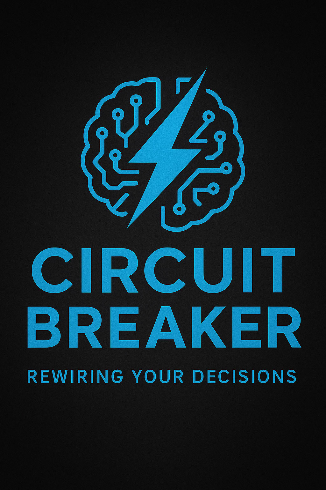

About
Stop the old mental loops.
Welcome to Circuit Breaker: Rewiring Your Decisions — the podcast that helps you stop the old mental loops and start building a better life.
Through thought-provoking psychological studies and accessible explanations, we uncover why we trust our memories, follow the crowd, judge others, form habits, and sometimes make choices that don’t serve us. Along the way, we explore what these discoveries reveal about the mind — and how understanding them can help us see our decisions more clearly.
Whether you’re curious about behavioural psychology, cognitive science, decision-making, or the surprising ways the human mind works, Circuit Breaker: Rewiring Your Decisions invites you to question what you think you know and discover the psychology behind everyday life.
- Host
- Ami To
- Episodes
- 42
- Cadence
- Weekly
- Field
- Social sciences
